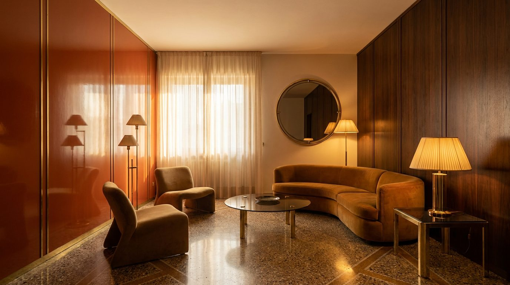

Atlante · IT-16 · Italia · Nord
Appartamento anni '70 con design italiano
Esempi · esterno e interno


Architettura · elementi riproducibili
- 90-140 mq, altezza 2,8-3 m
- pavimento in graniglia o moquette
- boiserie in legno scuro
- specchi fumé, ottoni, plexiglass
- pareti a smalto pieno
- lampade da terra e piantane
- imbottiti bassi e rotondi.
È la tipologia più "stilizzata": va usata per arredi dalla linea morbida e per tessuti a blocchi di colore.
Luce
calda e filtrata (tende, veneziane), integrata da luce artificiale puntuale; atmosfera da interno serale, non da giorno pieno.
Prompt di generazione (EN)
1970s Italian design apartment, 2.9 m ceiling, burnt-orange lacquered wall, dark walnut boiserie, graniglia floor, smoked mirror and brass details, low rounded seating, warm filtered light with practical lamps on, 35 mm, amber grade, cinematic.